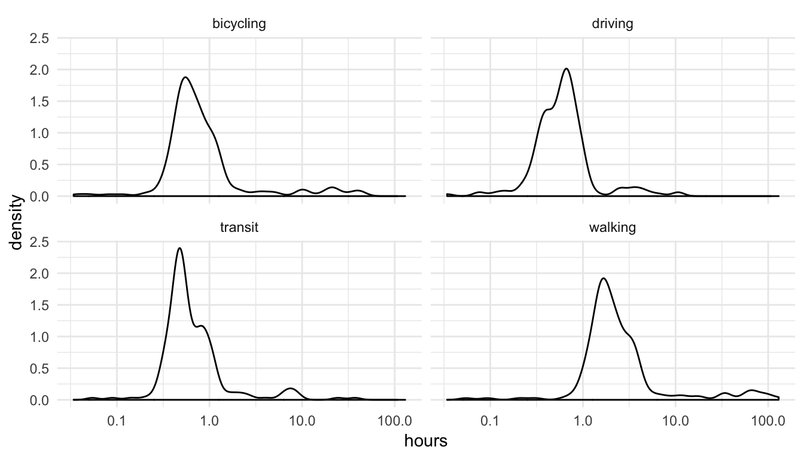

Chapter 17 Commuting time
do_eval=file.exists("commute_times.csv")Commuting time is often mentioned as a valid reason for leaving one employer for another.
You are asked to calculate the commuting time for the employee working at your company. You decide that hyphotetically they must all arrive in the office at 8.30 am. In the Google you identified that there is google api for doing this, called Distance Matrix API, which works for a matrix of origins and destinations.
The information returned is based on the recommended route between start and end points and consists of rows containing duration and distance values for each pair." To use the Distance Matrix API, you must first activate the API in the Google Cloud Platform Console and obtain the proper authentication credentials. You need to provide your own API key in each request.
The documentation on how to do this is located here: https://developers.google.com/maps/documentation/distance-matrix/intro
A file with 200 fake names and addresses has been put together for you. The task is to add the commuting time next to each staff member. Normally google will charge us one dollar for checking 200 commuting times.
Please note that the departure_time specifies the desired time of departure must be in POSIXct. format and must be in the future (i.e.greater than sys.time()). If no value is specified it defaults to Sys.time().
Please note you can only specify one of arrival_time or departure_time, not both. If both are supplied, departure_time will be used.
library(googleway)
Attaching package: 'googleway'The following object is masked from 'package:HRAnalytics':
google_distancelibrary(tidyverse)
library(lubridate)
# Set up here your api key key=
key = 'AIzaSyCOly69PDrlPlM42I378p2lmvNs8I2w'
d <- dmy_hms("10/09/2018 08:30")
arrival <- as.numeric(d)
from <- c("SE3+8UQ,UK")
to <- c("E14+5EU,UK")
test <- google_distance(origins = from,
destinations = to,
mode = "walking",
arrival_time = as.POSIXct(arrival, origin = "1970-01-01", tz = "UTC"),
key=key)
test$rows$elements[[1]]$distanceNULLTo make all this simpler, we put together an R function which can be used to analyse many results. Note this calls all modes of transport for every employee making it more costly than just running one mode per employee.
#' Get distance data between two points based on all the travel mode options. Works for many origin points.
#'
#' @param x A vector of origins in address or postcode format
#' @param dest A single destinationin address or postocde format
#' @param arrival_time A POSIXct datetime that folks need to arrive by
#' @param key A google distance API key
#' @param ... Additional options to pass to `google_distance()`
#'
#' @return Data.frame containing (typically) 4 rows per input element
google_distance_all = function(x, dest, arrival_time, key, ...){
# simple hygeine stuff
gd = purrr::possibly(
memoise::memoise(
google_distance)
, "Fail"
)
# Prep dataset
interested_in = expand.grid(from=x,
mode=c("driving", "walking", "bicycling", "transit"),
stringsAsFactors = FALSE)
# Perform google_distance calls for all combos
purrr::map2(interested_in$from,interested_in$mode,
~gd(.x, dest, mode=.y,
arrival_time = arrival_time,
key=key)
) %>%
# Extract relevant section
purrr::map("rows") %>%
purrr::map("elements") %>%
purrr::flatten() %>%
# Simplify the data.frames
purrr::map(unclass) %>%
purrr::map_df(purrr::flatten) %>%
# Add original lookup values
cbind(interested_in)
}This needs some packages installed to work
if(!require(purrr)) install.packages("purrr")
if(!require(memoise)) install.packages("memoise")Loading required package: memoise
Attaching package: 'memoise'The following object is masked from 'package:httr':
timeoutif(!require(googleway)) install.packages("googleway")We need some information about our google API account, where our office is, and when we’re testing commute times for.
office = "E14 5EU"
monday_9am = as.POSIXct("2018-12-03 09:00")Then we can use this function to get data for our 200 employees
the_200 <- read_csv("https://hranalytics.netlify.com/data/200_staff_members.csv")results = google_distance_all(
the_200$Postcode,
office,
arrival_time = monday_9am,
key = key
)
write_csv(results, file.path("data"), "commute_times.csv")results# A tibble: 800 x 5
text value status from mode
<chr> <dbl> <chr> <chr> <chr>
1 16 mins 963 OK E15 1NS driving
2 57 mins 3396 OK W12 8ET driving
3 41 mins 2469 OK SW1V 1AP driving
4 19 mins 1123 OK SE1 2RE driving
5 37 mins 2206 OK WC1A 2QS driving
6 43 mins 2604 OK N6 5JW driving
7 31 mins 1871 OK EC1N 8PN driving
8 36 mins 2158 OK WC2B 6TE driving
9 31 mins 1841 OK N1 9AZ driving
10 24 mins 1423 OK WC2R 3LD driving
# … with 790 more rowsNow that we have this data we can answer questions about our employee’s commute times.
Who has the longest commutes by car?
results %>%
filter(mode == "driving") %>%
mutate(hours=value/60^2) %>%
top_n(10, hours) %>%
arrange(desc(hours))# A tibble: 10 x 6
text value status from mode hours
<chr> <dbl> <chr> <chr> <chr> <dbl>
1 10 hours 46 mins 38745 OK BT49 0BX driving 10.7625
2 10 hours 33 mins 37986 OK BT51 3SQ driving 10.5517
3 6 hours 45 mins 24274 OK G4 0JY driving 6.74278
4 5 hours 19 mins 19145 OK CA1 1BG driving 5.31806
5 4 hours 35 mins 16519 OK PL1 4GP driving 4.58861
6 4 hours 17 mins 15411 OK BB5 3EZ driving 4.28083
7 3 hours 57 mins 14239 OK OL10 2TL driving 3.95528
8 3 hours 30 mins 12585 OK LS23 7BA driving 3.49583
9 3 hours 26 mins 12341 OK LS24 9QW driving 3.42806
10 3 hours 18 mins 11882 OK S10 3TR driving 3.30056We can look at the distributions overall too.
results %>%
mutate(hours=value/60^2) %>%
ggplot() +
aes(x=hours) +
geom_density() +
scale_x_log10() +
facet_wrap(~mode) +
theme_minimal()